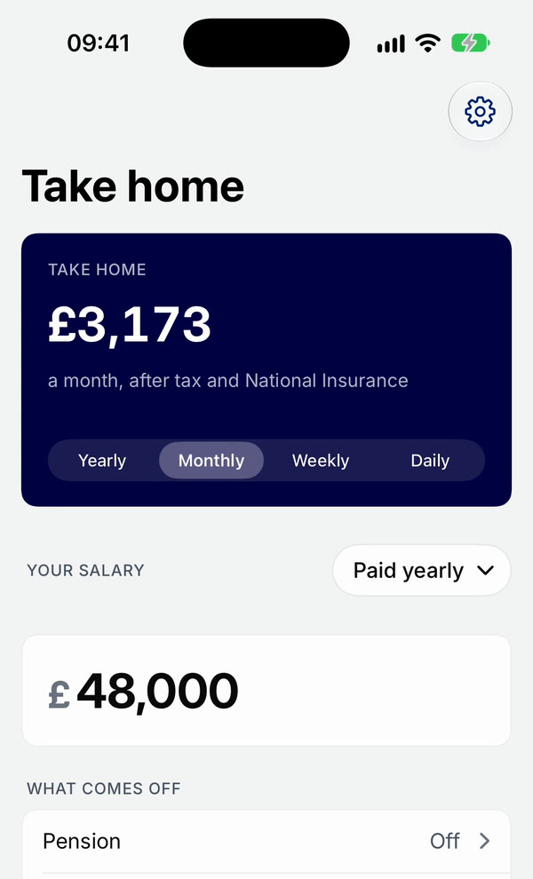
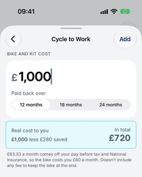
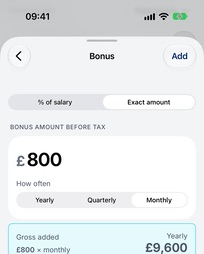

UK take-home pay calculator · 2026–27 tax year
Your take-home pay, in seconds.
Enter your salary and Netti shows what you take home after Income Tax, National Insurance, pension and student loan, with every deduction set out line by line.
- No account
- No ads
- No tracking

How it works
See each change as you make it
Change your pension, loan or tax code, and Netti shows the difference straight away, right beside your take home.
- Enter your salary. Just the figure on your contract.
- Set what comes off. Pension, student loan, tax code and region.
- See your take home. And what every change did to it.
Pension, by salary sacrifice
Take home
£3,029
£144 lessa month, after tax, National Insurance and 5% pension
Per month
- Gross pay
- £4,000.00
- Pension
- −£200.00
- Income tax
- −£550.50
- National Insurance
- −£220.20
- Take home
- £3,029.30
£48,000 a year, England, tax code 1257L, no student loan. Salary sacrifice comes off before tax and National Insurance.
Free calculator
Every deduction, line by line
Yearly, monthly, weekly or daily, using HMRC's 2026–27 rates and thresholds.
Take home first
The figure you care about leads, with Income Tax, National Insurance, pension and student loan set out under it.
Tax code and region
England, Wales and Northern Ireland, or Scotland with its own Income Tax bands. Enter the code from your payslip.
Pension
By salary sacrifice or relief at source, and see the difference each makes.
Student loan
Plans 1, 2, 4 and 5, and Postgraduate, together or on their own.
Light or dark, like your iPhone
And every text size, up to the largest, with full VoiceOver support.
Three steps to start
Your salary, what comes off, your take home. No sign-up screen in the way.
One unlock. No subscription.
Three tools for the bigger questions about your pay, unlocked with a single in-app purchase.
£3.99
One-off, in the UK
Compare a job offer with now
The difference in take home, not just in salary.
What a bike or car really costs
Salary sacrifice, with the tax and NI you save taken off.

Bonus, overtime and commission
Extra pay, taxed on top of your salary, or a single payment.

Bought once with your Apple ID. Restore it from the app's settings.
Worked example
A £5,000 bonus keeps £3,218
On a £48,000 salary, part of a £5,000 bonus lands in the 40% band. Netti shows how much of it you actually keep, before it reaches your payslip.
- Salary
- £48,000 a year
- Where
- England, tax code 1257L
- Pension, loan
- None
- Rates
- HMRC 2026–27, worked out by Netti's own tax engine
- £2,270 up to £50,270, at 20% tax + 8% NI
- −£635.60
- £2,730 above it, at 40% tax + 2% NI
- −£1,146.60
- You keep
- £3,217.80
Bonus modelling is part of Netti Pro. An estimate for guidance: your payslip may differ.
New to the UK
Moving to the UK for work?
See what a UK salary leaves you with before you arrive. Enter the offer and Netti shows your take home after UK Income Tax, National Insurance and pension.
Netti works out UK tax only. It doesn't cover tax in any other country.
On the App Store in 147 countries and regions
Download it wherever you are now, at your App Store's own price for Pro.
Compare an offer with your pay now
With Netti Pro, put a UK offer next to another UK salary.
Every deduction named
Income Tax, National Insurance, pension and student loan, line by line.
Privacy
Your salary stays on your phone
No account and no sign-in. Everything you enter stays on your iPhone, and this website doesn't track you either.
No account
Open it and enter a salary.
No ads
None in the app, free or Pro.
No tracking
No analytics in the app or on this site.
Stays on your iPhone
Nothing you enter is sent to us.
Apple handles the Netti Pro purchase. Read the Privacy Policy
Is Netti free?
Yes. The calculator is free to download and use, with no ads. Netti Pro is an optional one-off purchase, £3.99 in the UK, that adds extra income, Compare and salary sacrifice.
What does Netti Pro unlock?
Three things. Extra income: a bonus, overtime, commission or a single payment, and how each is taxed. Compare: a job offer next to what you take home now. Salary sacrifice: what a Cycle to Work bike or an electric car through work really costs, after the tax and National Insurance saved. It is one payment, not a subscription.
Is my salary information private?
Yes. Everything you enter stays on your iPhone and is never sent to us. There is no account, no ads and no tracking.
Do I need to create an account?
No. Open Netti and enter your salary.
Does Netti work for Scotland, Wales and Northern Ireland?
Yes. Choose England, Wales and Northern Ireland, or Scotland, and Netti uses that region’s Income Tax bands.
Does Netti handle student loans and pensions?
Yes, in the free calculator. Student loan Plans 1, 2, 4 and 5 and Postgraduate, and pensions by salary sacrifice or relief at source.
Is Netti up to date with this tax year?
Netti uses HMRC’s 2026–27 rates and thresholds, and is updated when they change.
I’m moving to the UK. Can I use Netti?
Yes. Netti shows what a UK salary leaves you with after UK Income Tax, National Insurance and pension, so you can see it before you arrive. It works out UK tax only, not tax in any other country.
Is Netti available on Android or iPad?
Not yet. Netti is for iPhone, with iOS 17 or later. An Android version is being built.
Does Netti give financial or tax advice?
No. Netti gives estimates for guidance only. Your payslip may differ because of cumulative PAYE, tax code changes or how your employer runs payroll. Netti is not financial or tax advice.
How do I get support?
Email hello@squaredmc.com and we’ll reply.
Download Netti, free.
No spreadsheets. No account. No ads. Just clarity.
iPhone, iOS 17 and later · Rated 4+ · Netti Pro £3.99 one-off